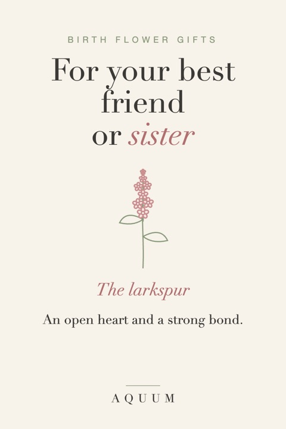

Birth Flower Gifts for Your Best Friend or Sister
2026-09-30
Written by the team behind Aquum, a small birth flower gift shop. How we make money.

Some friendships are hard to shop for precisely because they matter so much. A candle feels too small, and anything expensive feels strange. A birth flower gift sits right in the middle: it costs what you want it to cost, and it says something you'd probably never say out loud.
Two flowers made for friendship
- July · Larkspur: an open heart and a strong bond. It's the flower for the friend who stopped being "just a friend" years ago, and for sisters who became best friends somewhere along the way. See the July guide.
- November · Chrysanthemum: honest friendship and good fortune. It's the flower for the friend who tells you the truth, kindly. See the November guide.
If you know her birth month, her own flower is always the better choice: it's about her, not about the friendship. The month-by-month guide has all twelve.
Matching gifts
Friends and sisters love a matching set, as long as it isn't too matchy:
- Your two birth flowers, one each. She gets something with her flower, you keep something with yours. Same style, different flowers.
- The same item, two flowers. Two mugs or two totes, each with the other person's flower, so every morning coffee is a small reminder.
- Three or more for a group of friends, one flower each, handed out on the same day.
What to write in the card
The card is where the gift actually happens. Keep it short:
- Start with the meaning. "The larkspur means an open heart."
- Then say why it's hers. One specific memory, one sentence.
- End with something small and true. "I'm glad it's you."
When to give it
- Her birthday, with her own flower.
- Christmas, when a meaningful gift stands out among the gift cards. Made-to-order gifts take about a week to make and ship in the US, so order by mid-December.
- Galentine's Day, February 13, if your group celebrates it.
- For no reason at all, which is the best reason.
More ideas for the holidays are in our Christmas gift guide.
Planning a wedding? See birth flower bridesmaid gifts.